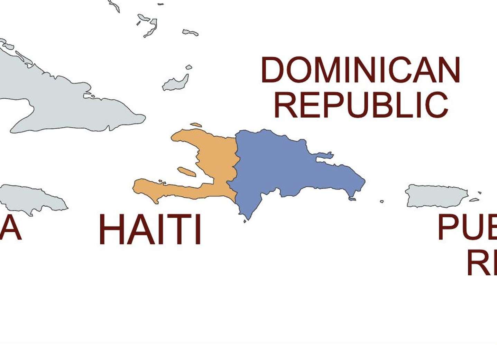
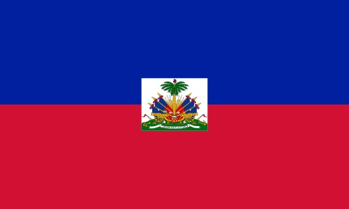
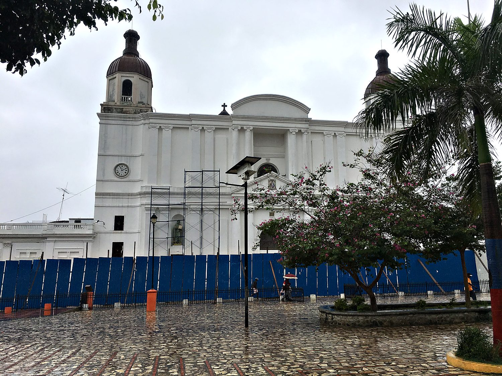
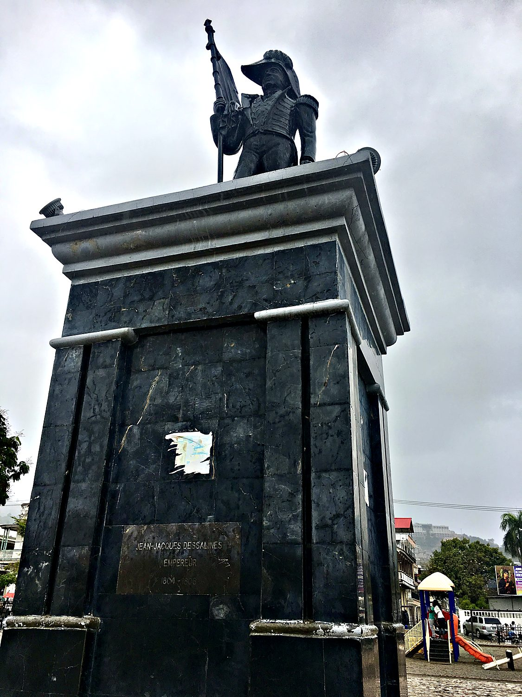
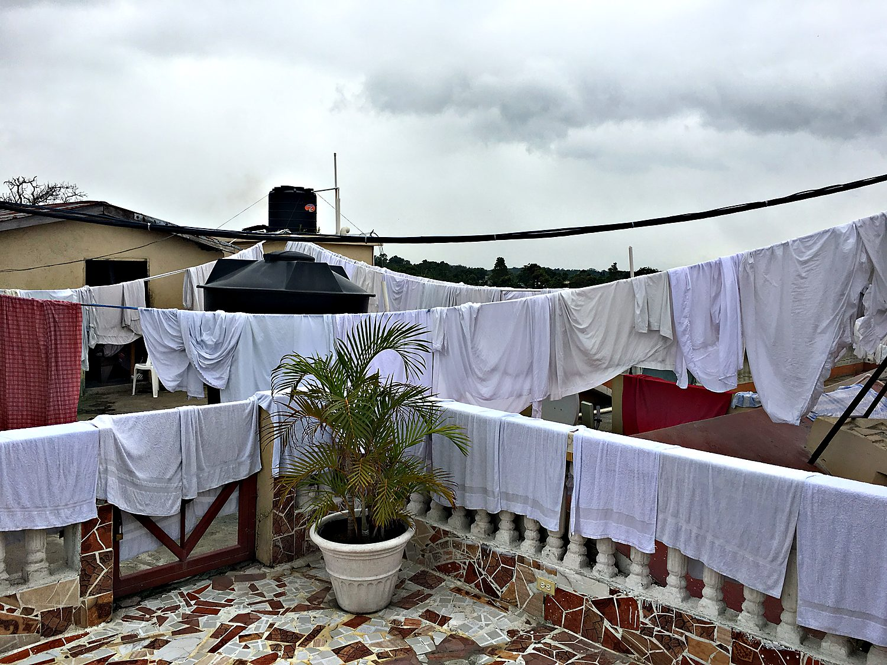

I crossed into Haiti in March 2018 from the Dominican border town of Dajabón. A generous stranger named Jonel ferried me over the Massacre River on the back of a motoconcho, and we were waved through, somewhat alarmingly, with no customs check whatsoever. Rain turned the unpaved roads to mud. I then boarded a gloriously overcrowded bus that featured a live rooster crowing from inside someone's suitcase and a conductor who did stand-up comedy for the entire ride. He punctuated it with cheerful cries of "le blanc!" (“the white”) whenever he referred to me. What followed was a short, humbling, and unexpectedly moving visit to a country whose poverty is real and whose history is bloody and groundbreaking.
I based myself in Cap-Haïtien, Haiti's northern city. In the 18th century, as the colonial capital Cap-Français, it was one of the wealthiest and most elegant cities in the Americas, nicknamed the "Paris of the Antilles." That wealth came from Saint-Domingue, the French colony that occupied the western third of Hispaniola and was, at its peak, the single richest colony on earth. But Haiti's true importance is not architectural or economic. It is revolutionary. This is the country that became the world's first Black-led republic, and the only nation in history to be born from a successful large-scale revolt of enslaved people.

The wealth of Saint-Domingue was built on almost unimaginable brutality. Half a million enslaved Africans produced the sugar and coffee that enriched France, worked under conditions so lethal that the population had to be constantly replenished. In 1791 they rose up. Over thirteen years of ferocious war they defeated the colonial planters, the Spanish, the British, and finally an expeditionary army sent by Napoleon himself. Toussaint Louverture, the revolution's brilliant early leader, was captured and died in a French prison. His lieutenant Jean-Jacques Dessalines carried the fight to victory and, on 1 January 1804, proclaimed the independent nation of Haiti. It was a thunderclap that terrified every slaveholding society in the hemisphere.

The world made Haiti pay for its audacity. In 1825, with warships in the harbour, France extracted an enormous "indemnity" of 150 million francs. It was ostensibly to compensate former slaveholders for their lost "property," in exchange for recognizing Haitian independence. Haiti serviced variations of this so-called double debt of independence for more than a century. Historians now count that foundational act of extortion among the deepest roots of the country's enduring poverty. The flag itself tells the origin story with startling literalism. Revolutionaries took the French tricolour and tore out the white, leaving blue and red bands beneath a coat of arms and the motto "L'Union Fait La Force," meaning unity makes strength. Today, Haitians still pay the price for their boldness. The country remains extremely poor, and with minimal rule of law, gangs wield significant influence.
At the centre of Cap-Haïtien stands its cathedral, Notre-Dame, a white, twin-towered church presiding over the main plaza and the daily bustle of the city. Like much of Haiti it has weathered earthquakes and hard decades, yet it remains the calm architectural anchor of the old town. It is a reminder of the deep Catholic thread woven through Haitian life. That thread coexists with Vodou, the syncretic religion that itself helped bind and inspire the revolutionaries of 1791.

On a plaza in the city stands a monument to Jean-Jacques Dessalines, the founding father whose plaque names him plainly: "Empereur, 1804–1806." A formerly enslaved man who became the revolution's most uncompromising general, Dessalines declared Haiti's independence and then crowned himself its first ruler as Emperor Jacques I. His was a brief and brutal reign that ended with his assassination two years later. He remains the towering figure of Haitian nationhood, at once liberator and cautionary tale. His image across the country insists that this republic was won, not granted.

You got me – I did not take any more photos this trip, so this was the best I could come up with. Online guides said that the locals do not always appreciate foreigners taking pictures of the poverty, and to be honest, I felt very on edge during my entire trip. I did not see any other white people during the entire trip, and not more than one or two Hispanic-looking Dominicans. After taking the wrong tap-tap (communal taxi) back from the Cap-Haitien city center, I almost got mugged. Though I managed to get out of the situation amicably, without losing any blood or money, it was a scary experience. Since I visited Haiti, the country has gotten even more lawless and chaotic, and it is currently in a state of near anarchy, without a functional government. What was eye-opening was that despite Haiti’s poverty being noticeably worse than even India’s, life went on: people were selling things on the street and getting on with their everyday lives, without seeming unhappy. I learned that poor people should not be treated with pity but with respect. I also discovered that most of the clothes that Americans send to Haiti as donations end up being sold across the border in the Dominican Republic. Haitians need opportunity and stability, not T-shirts.
